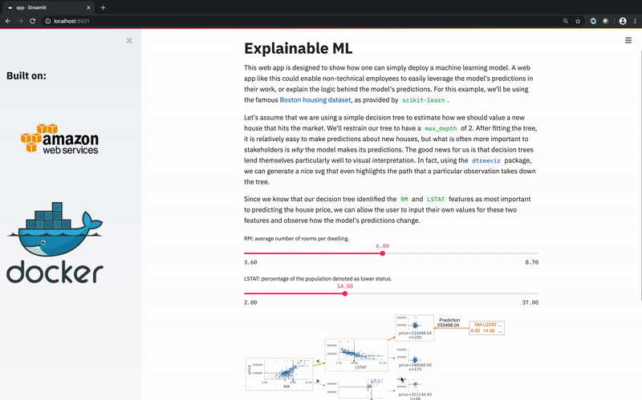
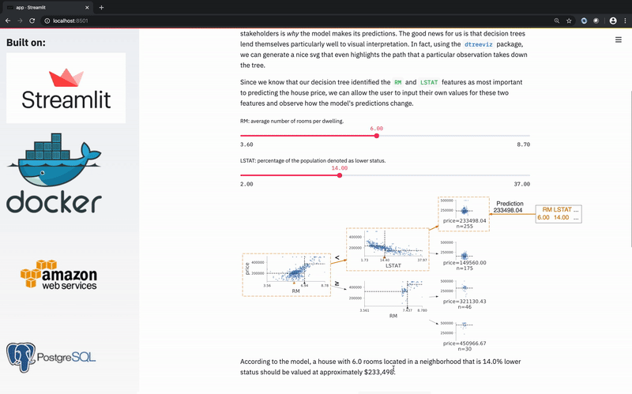

Deploying web apps with Streamlit, Docker, and AWS - part 3
Using docker-compose to add a Postgres database to our web app.
This is part 3 of a 3-part series. Make sure to read through part 1 and part 2 before you continue!
In parts 1 and 2, we covered how to build a Docker image for a Streamlit web app and how to move your code into the cloud. In this post, we will walk through how to connect other containerized services to your app. Specifically, we’ll connect to a Postgres database, but this process should hold for any other service you’d like to employ.
New features require new tools
We’ve had a running example of a bare-bones web app that could be used to deploy a machine learning model for use by non-technical employees.

In some circumstances, we may want the users of this web app to have access not only to the predictions of this model, but also to certain subsets of the underlying data itself. In the example above, it would be nice to grant the users the ability to query specific rows from the dataset which fall into a given leaf of the decision tree. In other words, to give them snapshots of the data, like this (the example uses the famous Boston housing dataset,
as provided by scikit-learn)
| CRIM | ZN | INDUS | CHAS | NOX | RM | AGE | DIS | RAD | TAX | PTRATIO | B | LSTAT | PRICE | |
|---|---|---|---|---|---|---|---|---|---|---|---|---|---|---|
| 0 | 0.00632 | 18 | 2.31 | 0 | 0.538 | 6.575 | 65.2 | 4.09 | 1 | 296 | 15.3 | 396.9 | 4.98 | 24 |
| 1 | 0.02731 | 0 | 7.07 | 0 | 0.469 | 6.421 | 78.9 | 4.9671 | 2 | 242 | 17.8 | 396.9 | 9.14 | 21.6 |
| 2 | 0.02729 | 0 | 7.07 | 0 | 0.469 | 7.185 | 61.1 | 4.9671 | 2 | 242 | 17.8 | 392.83 | 4.03 | 34.7 |
| 3 | 0.03237 | 0 | 2.18 | 0 | 0.458 | 6.998 | 45.8 | 6.0622 | 3 | 222 | 18.7 | 394.63 | 2.94 | 33.4 |
| 4 | 0.06905 | 0 | 2.18 | 0 | 0.458 | 7.147 | 54.2 | 6.0622 | 3 | 222 | 18.7 | 396.9 | 5.33 | 36.2 |
The easiest way to add this feature to our web app would just be to save the dataset as part of our source code and ensure it gets included in the Docker image. This approach, however, can quickly become infeasible as our dataset gets large, or we want to make any updates to it. A more robust solution would be to connect our web app directly to a database, enabling us to decouple the app and the data at will, and freely make revisions to either in tandem.
Introducing docker-compose
Docker has a fantastic tool called “docker-compose”, which allows you to easily chain together containers, and takes care of many details under the hood so that things just work. This is the perfect tool for our use-case. Below, we’ll walk through how to use it!
All the code used to add the database to our app can be found on the docker-compose+postgres branch of the repository. The beauty of Docker is that we do not have to make any structural changes to our app in order to interact with the database, only add a bit of functionality.
The first step in adding the database is creating a docker-compose.yml file in the root of our repository. Mine looks like this,
version: "3.7"
services:
db:
image: "postgres:12"
container_name: "postgres"
ports:
- "5432:5432"
volumes:
- db_data:/var/lib/postgresql/data
env_file:
- .env
streamlit:
build:
context: .
container_name: "streamlit"
ports:
- "8501:8501"
volumes:
db_data:
Let’s break it down piece by piece.
Configuring Postgres database
The first line,
version: "3.7"
indicates which version of the Compose file format that we are using.
The majority of our legwork falls under services, which is where we’ll define how we want to connect our database and app. I had some help from this blog in constructing the postgres portions correctly.
db:
image: "postgres:12"
container_name: "postgres"
ports:
- "5432:5432"
volumes:
- db_data:/var/lib/postgresql/data
env_file:
- .env
Here, we let Docker know that we want to use the postgres:12 image from DockerHub and refer to it as postgres. Since 5432 is the default port for postgres, we make sure to map that to the container’s outgoing 5432 port, so that it will be accessible by the app. Next, we mount our postgres database (db_data) to the location within the container that postgres stores all of its data, /var/lib/postgresql/data (this blog explains why this is the preferred method to gurantee our data is persisted). Lastly, we point the database towards a .env file which contains the username, password, and default name of our database. This file enables us to programmatically query the database without leaving our password in the source code!
Persisting our data
All Docker containers are designed to be ephemeral, easily replaceable blocks that we can place together like legos. On the other hand, we want our data to persist even as our containers change. As Ranvir Singh said,
One of the most challenging tasks … is separating data from software.
As a solution to this problem, we define a single volume that Docker will mount to the postgres container each time it is re-built or re-run.
volumes:
db_data:
Connecting to existing application
With our database aligned, we can add our existing streamlit app to the docker-compose.yml.
streamlit:
build:
context: .
container_name: "streamlit"
ports:
- "8501:8501"
All the action commences with context: ., which indicates to Docker that the building of our streamlit image should be governed by a Dockerfile residing in the same directory as the docker-compose.yml. Other than that, we open up streamlit’s default 8501 port, just as we did in part 1.
Most commonly, you will already have a Postgres instance storing your data. Since our app uses data retrieved via api, there is one extra step we must take to get this data into the database. This can be handled by making use of a script that retrieves the data, then loads it into the database each time the app’s image is built. To do so, we must add the following line to our Dockerfile. (see full Dockerfile here)
CMD python3 scripts/load_docker_db.py
An example can be found at ./scripts/load_docker_db.py in the example repository.
Putting it all together
Now, in the root of our repository, we have both a Dockerfile and a docker-compose.yml. With one command, we can build the image for our app, pull the Postgres image, connect them on one network, and run their containers together!
$ docker-compose up -d
Creating network "streamlit-docker_default" with the default driver
Creating streamlit ... done
Creating postgres ... done
Where -d runs it all in the background.
Validating Postgres is working properly
With all of this happening in the background, it is helpful to take a few diagnostic steps to verify that things are working as expected.
A quick way to validate that Postgres is working is to peek at the logs.
$ docker logs -f postgres
.
.
. <various log messages>
.
.
2020-03-12 13:13:56.831 UTC [1] LOG: database system is ready to accept connections
If you see a log stating that the database is ready to accept connections, you’re good to go! (control-C to exit the logs)
For further validation, you can even enter a psql shell within the Postgres container, then make a small query to test things out.
$ docker exec -it postgres psql -U <username> -d streamlit_db
psql (12.2 (Debian 12.2-2.pgdg100+1))
Type "help" for help.
streamlit_db=# select RM, LSTAT, PRICE
streamlit_db-# from boston
streamlit_db-# where RM > 7
streamlit_db-# limit 2;
rm | lstat | price
-------+-------+-------
7.185 | 4.03 | 34.7
7.147 | 5.33 | 36.2
(2 rows)
streamlit_db=#\q
$
Viewing and stopping your app
With our containers running, we can view the app in a web browser at http://localhost:8501/. If you need to share the app with others, you can use the steps covered in part 2 to deploy this app to the cloud.

When you’re finished, you can use this command to stop and remove the containers running your app and database.
$ docker-compose down
Stopping postgres ... done
Stopping streamlit ... done
Removing postgres ... done
Removing streamlit ... done
Removing network streamlit-docker_default